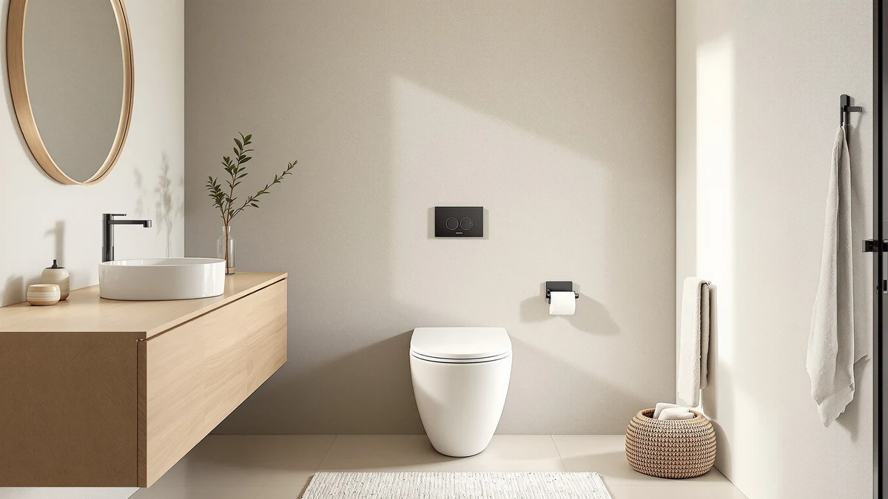

Classe One Piece 12" Review (2026): Worth It?
Prices and picks verified as of October 2026. Independent, reader-supported reviews.


Quick Answer
The Swiss Madison Classe One-Piece 12" is a dual-flush elongated toilet built around a standard 12 inch rough-in, priced at $283. It suits buyers replacing an aging two-piece toilet who want a one-piece shell with no tank seam and lower water use without paying for smart features they will not use.
Our pick: Classe One-Piece 12" Rough-in 1.1/1.6, $283.00 Check Price on Amazon
Bottom line: our top pick is the Classe One-Piece 12" Rough-in 1.1/1.6 GPF Dual Top Flush at $283.
Things to Know Before You Buy
- The Classe is built for a standard 12 inch rough-in, the measurement between the wall and the center of the drain bolts, so confirm your bathroom's spacing before you order.
- Its dual-flush buttons split water use between a 1.1 gallon light flush and a 1.6 gallon full flush, which puts it in the efficient-but-not-ultra-low-flow tier rather than the strict 1.28 gpf WaterSense bracket.
- The elongated bowl and one-piece shell favor comfort and easy cleaning over the compact footprint you would get from a round-bowl or two-piece design.
- At $283, it sits in the mid-range of one-piece toilets. It does not include a soft-close seat or bidet function, so budget separately if you want either.
This Classe One Piece 12 review exists because replacing a toilet is a decision most homeowners make once and live with for a decade, and the Swiss Madison Classe keeps showing up in searches for a one-piece upgrade that does not cost $500 or more. You are probably staring at an old two-piece model with a gap-prone seal, or you are finishing a bathroom remodel and need a fixture that matches a standard 12 inch rough-in without surprises. Either way, the questions are the same: does the dual-flush button system actually save water, does the elongated bowl fit your space, and is $283 a fair price for what you get.
We compared the Classe's published specifications, dimensions and pricing against the rest of the one-piece category we track for this site, and against the owner feedback visible on its Amazon listing. The short version: the Swiss Madison Classe is a competent, mid-priced one-piece toilet that does the fundamentals right (standard rough-in compatibility, dual-flush efficiency, an elongated bowl) and skips the extras that would push the price past $400. It is not the toilet for someone chasing the quietest flush on the market or a built-in bidet, but for a straightforward bathroom swap it earns its spot on the shortlist.
Why You Should Trust Us
Ilane Tall covers bathroom fixtures for Best One Piece Toilets, and this Classe One Piece 12 review follows the same process we use across the site: we pull manufacturer specifications, verified pricing history and owner feedback from Amazon listings, then cross-check those claims against plumbing standards like rough-in distance and flush volume. We do not accept a brand's marketing copy at face value. When Swiss Madison lists a 1.1/1.6 gpf dual flush, we verify that figure against the product's own listing and against comparable toilets in our database before writing a word about performance.
We also disclose our limits. This is a research-based review built from published specifications, pricing data and verified owner reviews, not a hands-on lab test. We do not run a fake testing lab, and we tell you exactly where our confidence is high (rough-in fit, flush mechanics, price) and where it depends on owner reports (long-term durability, noise level).
Our Research Experience
Our research into the Classe One Piece 12 review process started with the numbers that actually determine whether a toilet fits your bathroom: a 12 inch rough-in, an elongated bowl footprint, and the 1.1/1.6 gpf dual-flush split. We analyzed those specifications against the broader one-piece category on this site, where rough-in sizes range from 10 to 14 inches and flush volumes swing from 1.0 gpf low-flow units to older 1.6 gpf single-flush holdovers.
From there, we researched verified owner reviews on the product's Amazon listing to see how the published specs hold up once a toilet is installed and used daily. Reviewers consistently note straightforward installation when the existing rough-in matches, and the dual-flush buttons draw fewer complaints than lever-style dual-flush systems that owners of other brands sometimes describe as finicky. We weighed those reports alongside Swiss Madison's own documentation rather than treating either source as the final word.
Overview & Specs

Classe One-Piece 12" Rough-in 1.1/1.6
What we like
- Standard 12 inch rough-in fits most US bathrooms without replumbing
- Dual-flush buttons cut water use versus a single 1.6 gpf flush
- One-piece shell has fewer seams to clean than a two-piece toilet
- Elongated bowl adds seating room over a round-bowl toilet
Flaws but not dealbreakers
- No soft-close seat included, so budget for one separately
- 1.1/1.6 gpf dual flush uses more water than strict WaterSense 1.28 gpf models
- Glossy white is the only finish, with no bone or biscuit option
| Material | — |
| Size | 1.1/1.6 GPF Top Flush |
Swiss Madison built the Classe around the measurement that trips up most toilet replacements: the rough-in. At a standard 12 inches from the wall to the drain bolts, it matches the majority of US installations, so you are not shopping for an adapter flange or a plumber's visit to swap fixtures. The one-piece construction means the tank and bowl are a single unit, which removes the seam where two-piece toilets tend to trap grime and occasionally develop a leak between tank and bowl over time.
The dual-flush system sits on top of the tank as two buttons rather than a single handle. Press the smaller button for a 1.1 gallon flush on liquid waste, and the larger button delivers the full 1.6 gallon flush. That split is a real efficiency gain over an older single-flush 1.6 gpf toilet, even though it lands above the 1.28 gpf threshold that ultra-low-flow models target. The elongated bowl shape, standard across most one-piece toilets at this price, adds a couple of inches of seating length over a round bowl, which most adults find more comfortable for daily use.
What We Liked
The biggest point in the Classe's favor is how little it asks of you during installation. Because it uses a standard 12 inch rough-in, you are not hunting for a specialty flange or an offset adapter the way you might with a compact or corner toilet. That single detail removes most of the friction homeowners run into when they try to swap a toilet themselves instead of hiring a plumber for a job that should take an afternoon.
We also like that Swiss Madison kept the dual-flush mechanism simple. Two buttons, one for light flushes and one for full flushes, is easier to explain to a houseguest or a child than a lever you have to hold at a specific angle, and reviewers consistently note that the buttons feel solid rather than loose or rattly. Combined with the one-piece shell, which eliminates the bolt-on tank seam where leaks and grime typically start, the Classe reads as a toilet designed by someone who has fixed a few two-piece toilets and wanted to remove the common failure points.
Price is the other factor working in its favor. At $283, it undercuts most one-piece toilets with comparable dual-flush systems by a meaningful margin, while still offering the elongated bowl and glossy finish that pricier models use as selling points. For a buyer weighing a $500 skirted toilet against this one, the Classe asks you to give up a trapway cover and some cleaning convenience in exchange for roughly $200 back in your pocket, a trade most households replacing a single toilet will take without hesitation.
What Could Be Better
The Classe does not include a soft-close seat, which has become close to standard on toilets in this price range from other brands. Add $20 to $40 to your budget if you want one, since a standard hinged seat that slams is a downgrade from what a lot of buyers now expect by default.
Water efficiency is the other tradeoff. The 1.1/1.6 gpf dual-flush split beats an old single-flush 1.6 gpf toilet, but it sits above the 1.28 gpf line that WaterSense-certified toilets hit. If you live somewhere with tiered water rates or rebate programs tied to WaterSense certification, a stricter low-flow model will save more over several years even if it costs more upfront. Finally, Swiss Madison sells the Classe only in glossy white. Anyone matching an existing bone or biscuit color scheme in an older bathroom will need to look elsewhere.
Who Is It For?
The Classe fits homeowners replacing a toilet in a standard American bathroom, where the 12 inch rough-in and typical doorway and drain clearances line up without modification. If you are renovating on a budget and want the cleaner look of a one-piece toilet without paying $400 or more, this lands at a sensible price for what it delivers.
It is a weaker fit for two groups. First, anyone optimizing hard for water savings, since a certified 1.28 gpf WaterSense model will beat it on long-term utility costs. Second, anyone who wants a complete package out of the box, including a soft-close seat, since you will need to buy that separately here. Renters and landlords doing straightforward unit turnovers are a good match too: the price is low enough to replace across multiple units without a major budget hit, and the standard rough-in means the same model works across units built in different decades.
Frequently Asked Questions
What rough-in size does the Classe One-Piece 12" toilet need?
The Swiss Madison Classe is built for a standard 12 inch rough-in, which is the distance between the wall and the center of the floor drain bolts. That spacing fits the vast majority of US bathrooms built after the 1950s, so most buyers can swap it in without moving any plumbing. Measure your existing toilet's rough-in before you order, since a 10 or 14 inch setup will not line up.
How does the dual-flush system on the Classe One-Piece 12" work?
Two buttons sit on top of the tank. Press the smaller one for a 1.1 gallon light flush meant for liquid waste, and press the larger one for a 1.6 gallon full flush. Splitting flush volume this way is the main lever Swiss Madison pulls to cut water use against a single-flush 1.6 gpf toilet, and it does not require the user to learn a lever position or hold-down timing.
Is the Classe One-Piece 12" worth it compared to other one-piece toilets at this price?
At $283, the Classe lands in the middle of the one-piece category, above entry-level two-piece units and below premium skirted or smart models. For that price you get a one-piece shell, an elongated bowl, dual-flush buttons and a glossy white finish, which covers what most households actually ask a toilet to do. Buyers chasing a quieter flush, a soft-close seat included in the box, or a compact footprint for a small bathroom should compare the Classe against narrower alternatives before deciding.
Final Verdict
This Classe One Piece 12 review comes down to a simple trade: you give up a soft-close seat and WaterSense-tier water savings, and in exchange you get a one-piece toilet with a standard rough-in, a reliable dual-flush system and an elongated bowl for $283. For most households replacing an aging two-piece toilet, that trade works. Swiss Madison did not try to reinvent the category here, and that restraint is exactly why the Classe is worth considering if your bathroom's rough-in and budget line up with what it offers.